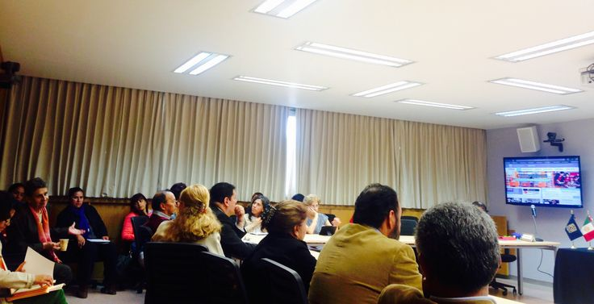

Publicaciones
Productos del trabajo y líneas de investigación realizadas en la Coordinación

Se Realiza la Inauguración del 2º Seminario de Innovación de la Práctica Docente en la ENTS

Académicos de la Escuela Nacional de Trabajo Social y h@bitat puma
presentes en la inauguración de la 2º emisión delo Seminario
Innovación de la Práctica Docente con Apoyo de las TIC para Trabajo Social.
El 29 de abril se llevó a cabo la sesión inaugural de la 2º emisión del Seminario Innovación de la Práctica Docente con Apoyo de las TIC para Trabajo Social. El evento tuvo lugar en la sala de videoconferencia del Edificio C de la Escuela Nacional de Trabajo Social. El propósito de este Seminario es crear un ambiente de reflexión y análisis sobre el uso de las TIC para el desarrollo de una práctica docente innovadora y eficiente; en él se busca elaborar y aplicar propuestas innovadoras de practica docente con apoyo de las TIC y se definir la oferta académica de cursos, talleres y micro talleres.
Durante la ceremonia de inauguración, la Maestra Elizabeth Bautista, Secretaría General de la ENTS; recalcó la importancia y beneficios del uso de las TIC para la planta docente. Por parte de h@bitat puma, la Dra. Marina Kriscautzky Lexague, Coordinadora del programa, dijo que el Seminario es un espacio para "reunirnos para reflexionar cómo enseñamos y cómo hacemos que la tecnología se transforme en una herramienta que nos permita enseñar mejor".
La Dra. Judith Zubieta García, Coordinadora de Universidad Abierta y Educación a Distancia, habló sobre la importancia de romper con la brecha generacional entre alumnos y profesores, ya que las necesidades de los jóvenes están en constante cambio y movimiento. Agradeció a los profesores presentes por el compromiso con su labor y los invitó a ser facilitadores de la apropiación del conocimiento para sus alumnos y agentes de cambio también entre otros profesores. Agradeció a la DGTIC y h@bitat puma por el compromiso con la UNAM y la ENTS en particular.
Finalmente, la Maestra Elizabeth Martínez, Coordinadora del Seminario por parte de h@bitat puma dio la introducción al Seminario explicando cómo desarrollará a lo largo de las sesiones presenciales siguientes. Los profesores se presentaron y dijeron lo que esperaban del seminario. Resaltaron las necesidades de cautivar a los alumnos y aplicar las nuevas tecnologías en sus clases, así como su motivación para ser cada vez más competentes en el panorama educativo actual y su curiosidad por saber más.

Hecho en México, Universidad Nacional Autónoma de México (UNAM), todos los derechos reservados 2009 - 2016. Esta página puede ser reproducida con fines no lucrativos, siempre y cuando se cite la fuente completa y su dirección electrónica, y no se mutile. De otra forma requiere permiso previo por escrito de la institución.